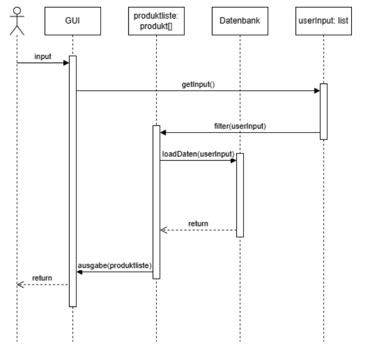
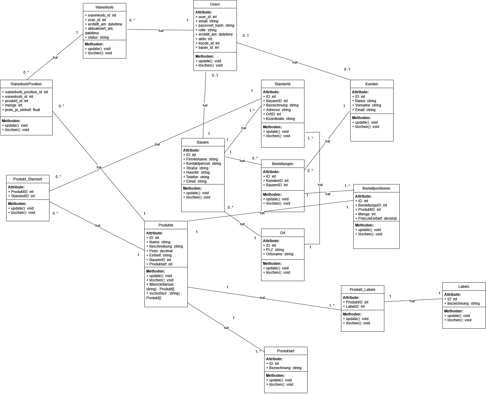

👨💻 Technische Dokumentation¶
Diese Seite bietet einen technischen Überblick über die Architektur und Struktur von Landly.
🏗️ Aktivitätsdiagramm¶
Das Aktivitätsdiagramm zeigt den Ablauf und die Interaktionen im System:

Beschreibung:
Das Diagramm visualisiert die Hauptaktivitäten und Entscheidungspunkte im System. Es zeigt, wie Benutzer durch verschiedene Prozesse navigieren - von der Registrierung über die Produktsuche bis zur Bestellung.
Kernkomponenten: - Benutzer-Authentifizierung - Produktsuche und Filterung - Warenkorb-Verwaltung - Bestellprozess - Admin- und Landwirt-Funktionen
🔄 Sequenzdiagramm¶
Das Sequenzdiagramm zeigt die zeitliche Abfolge der Interaktionen zwischen Komponenten:

Beschreibung:
Dieses Diagramm illustriert die Kommunikation zwischen Frontend, Backend und Datenbank während eines typischen Anwendungsfalls. Es zeigt den Nachrichtenfluss und die Reihenfolge der Operationen.
Dargestellte Prozesse: - API-Requests und Responses - Datenbank-Abfragen - Authentifizierungs-Flow - Datenvalidierung - Fehlerbehandlung
🏛️ Klassendiagramm¶
Das Klassendiagramm zeigt die Objektstruktur und Beziehungen im System:

Beschreibung:
Das Klassendiagramm definiert die Hauptentitäten des Systems und deren Beziehungen. Es bildet die Grundlage für das Datenbankmodell und die Backend-Logik.
Hauptklassen: - User: Benutzer (Kunde, Landwirt, Admin) - Farmer: Erweiterte Landwirt-Informationen - Product: Produkte der Landwirte - Order: Bestellungen - OrderItem: Bestellpositionen
Beziehungen: - User ↔ Farmer (1:1) - User ↔ Order (1:n) - Farmer ↔ Product (1:n) - Order ↔ OrderItem (1:n) - Product ↔ OrderItem (n:m)
🗄️ Logisches Datenbankmodell (ER-Diagramm)¶
Das Entity-Relationship-Diagramm zeigt die logische Struktur der Datenbank:

Beschreibung:
Das ER-Diagramm modelliert die Entitäten und ihre Beziehungen auf konzeptioneller Ebene, bevor sie in das physische Datenbankschema überführt werden.
Hauptentitäten:
- Bauern: Landwirte mit Hofprofil
- Kunden: Konsumenten der Plattform
- Produkte: Angebotene Produkte
- Bestellungen: Kundenaufträge
- Standorte: Geografische Informationen
- Ort: PLZ-Zuordnung
Kardinalitäten: - Ein Bauer kann mehrere Produkte anbieten (1:n) - Ein Kunde kann mehrere Bestellungen aufgeben (1:n) - Eine Bestellung enthält mehrere Bestellpositionen (1:n) - Ein Produkt kann in mehreren Bestellpositionen vorkommen (n:m über Bestellposition)
📋 Physisches Datenbankmodell¶
Das System basiert auf einem relationalen Datenbankmodell mit folgenden Haupttabellen:
Tabelle: users¶
Speichert alle Benutzer des Systems.
| Feld | Typ | Beschreibung | Constraints |
|---|---|---|---|
id |
INTEGER | Primärschlüssel | PK, AUTO_INCREMENT |
email |
VARCHAR(255) | E-Mail-Adresse | UNIQUE, NOT NULL |
password_hash |
VARCHAR(255) | Gehashtes Passwort | NOT NULL |
first_name |
VARCHAR(100) | Vorname | NOT NULL |
last_name |
VARCHAR(100) | Nachname | NOT NULL |
role |
VARCHAR(20) | Rolle (customer/farmer/admin) | NOT NULL |
street |
VARCHAR(255) | Straße | NOT NULL |
plz |
VARCHAR(10) | Postleitzahl | NOT NULL |
city |
VARCHAR(100) | Stadt | NOT NULL |
phone |
VARCHAR(50) | Telefonnummer | NULL |
created_at |
DATETIME | Erstellungsdatum | DEFAULT NOW() |
Anmerkungen: - E-Mail ist eindeutig und dient als Login - Passwort wird mit bcrypt gehasht - Rolle bestimmt Zugriffsrechte im System
Tabelle: farmers¶
Erweiterte Informationen für Landwirte.
| Feld | Typ | Beschreibung | Constraints |
|---|---|---|---|
id |
INTEGER | Primärschlüssel | PK, AUTO_INCREMENT |
user_id |
INTEGER | Referenz zu users | FK, UNIQUE, NOT NULL |
farm_name |
VARCHAR(255) | Name des Hofes | NOT NULL |
description |
TEXT | Hofbeschreibung | NULL |
farm_street |
VARCHAR(255) | Straße des Hofes | NOT NULL |
farm_plz |
VARCHAR(10) | PLZ des Hofes | NOT NULL |
farm_city |
VARCHAR(100) | Stadt des Hofes | NOT NULL |
bio_certified |
BOOLEAN | Bio-Zertifizierung | DEFAULT FALSE |
is_approved |
BOOLEAN | Admin-Freigabe | DEFAULT FALSE |
Anmerkungen:
- Ein User kann nur ein Farmer-Profil haben
- is_approved muss TRUE sein, damit Produkte angelegt werden können
- farm_plz wird für Umkreissuche verwendet (indiziert)
Tabelle: products¶
Produkte der Landwirte.
| Feld | Typ | Beschreibung | Constraints |
|---|---|---|---|
id |
INTEGER | Primärschlüssel | PK, AUTO_INCREMENT |
farmer_id |
INTEGER | Referenz zu farmers | FK, NOT NULL |
name |
VARCHAR(255) | Produktname | NOT NULL |
description |
TEXT | Produktbeschreibung | NULL |
category |
VARCHAR(100) | Kategorie | NOT NULL |
price |
DECIMAL(10,2) | Preis pro Einheit | NOT NULL |
unit |
VARCHAR(50) | Einheit (kg, Stück, etc.) | NOT NULL |
bio |
BOOLEAN | Bio-Qualität | DEFAULT FALSE |
available |
BOOLEAN | Verfügbarkeit | DEFAULT TRUE |
created_at |
DATETIME | Erstellungsdatum | DEFAULT NOW() |
Anmerkungen:
- Kategorie für Filterung (z.B. "Gemüse", "Obst", "Milchprodukte")
- Preis wird in Euro gespeichert
- available = FALSE graut Produkt aus (nicht mehr bestellbar)
Tabelle: orders¶
Bestellungen von Kunden.
| Feld | Typ | Beschreibung | Constraints |
|---|---|---|---|
id |
INTEGER | Primärschlüssel | PK, AUTO_INCREMENT |
customer_id |
INTEGER | Referenz zu users | FK, NOT NULL |
farmer_id |
INTEGER | Referenz zu farmers | FK, NOT NULL |
status |
VARCHAR(20) | Status der Bestellung | NOT NULL |
total_price |
DECIMAL(10,2) | Gesamtpreis | NOT NULL |
pickup_date |
DATETIME | Geplantes Abholdatum | NULL |
created_at |
DATETIME | Bestelldatum | DEFAULT NOW() |
updated_at |
DATETIME | Letzte Änderung | DEFAULT NOW() |
Status-Werte:
- open - Bestellung eingegangen
- confirmed - Von Landwirt bestätigt
- picked_up - Abgeholt
- cancelled - Storniert
Anmerkungen:
- Eine Bestellung gehört zu genau einem Landwirt
- Total_price wird beim Erstellen berechnet und gespeichert
- Status-Updates ändern updated_at automatisch
Tabelle: order_items¶
Einzelne Positionen innerhalb einer Bestellung.
| Feld | Typ | Beschreibung | Constraints |
|---|---|---|---|
id |
INTEGER | Primärschlüssel | PK, AUTO_INCREMENT |
order_id |
INTEGER | Referenz zu orders | FK, NOT NULL |
product_id |
INTEGER | Referenz zu products | FK, NOT NULL |
quantity |
INTEGER | Menge | NOT NULL |
unit_price |
DECIMAL(10,2) | Preis zum Bestellzeitpunkt | NOT NULL |
Anmerkungen:
- unit_price speichert Preis zum Zeitpunkt der Bestellung (historische Genauigkeit)
- Bei Produktlöschung bleibt OrderItem erhalten (ON DELETE RESTRICT)
- Gesamtpreis eines Items = quantity * unit_price
Datenbank-Indizes¶
Für optimale Performance wurden folgende Indizes angelegt:
CREATE INDEX idx_users_email ON users(email);
CREATE INDEX idx_farmers_plz ON farmers(farm_plz);
CREATE INDEX idx_products_category ON products(category);
CREATE INDEX idx_products_available ON products(available);
CREATE INDEX idx_orders_customer ON orders(customer_id);
CREATE INDEX idx_orders_farmer ON orders(farmer_id);
CREATE INDEX idx_orders_status ON orders(status);
Begründung:
- users.email: Login-Vorgänge
- farmers.farm_plz: Umkreissuche
- products.category: Filterung nach Kategorie
- orders.*_id: Zugriff auf Bestellungen nach Benutzer/Landwirt
🔌 API-Referenz¶
Übersicht¶
Die REST-API basiert auf FastAPI und folgt RESTful-Prinzipien.
Base URL (lokal): http://localhost:8000/api
Authentifizierung: JWT Bearer Token
Hauptendpunkte¶
Authentifizierung¶
| Methode | Endpunkt | Beschreibung |
|---|---|---|
| POST | /auth/register |
Neuen Benutzer registrieren |
| POST | /auth/login |
Anmelden und Token erhalten |
Produkte¶
| Methode | Endpunkt | Beschreibung |
|---|---|---|
| GET | /products |
Alle Produkte abrufen (mit Filtern) |
| GET | /products/{id} |
Einzelnes Produkt abrufen |
| POST | /products |
Neues Produkt erstellen (Farmer) |
| PUT | /products/{id} |
Produkt aktualisieren (Farmer) |
| DELETE | /products/{id} |
Produkt löschen (Farmer) |
Bestellungen¶
| Methode | Endpunkt | Beschreibung |
|---|---|---|
| GET | /orders |
Eigene Bestellungen abrufen |
| GET | /orders/{id} |
Einzelne Bestellung abrufen |
| POST | /orders |
Neue Bestellung erstellen |
| PATCH | /orders/{id}/status |
Bestellstatus ändern (Farmer) |
Landwirte¶
| Methode | Endpunkt | Beschreibung |
|---|---|---|
| GET | /farmers/{id} |
Landwirt-Informationen |
| GET | /farmers/{id}/products |
Produkte eines Landwirts |
| POST | /farmers |
Farmer-Profil erstellen |
Suche¶
| Methode | Endpunkt | Beschreibung |
|---|---|---|
| GET | /search?plz={plz}&radius={km} |
Umkreissuche nach PLZ |
Benutzer¶
| Methode | Endpunkt | Beschreibung |
|---|---|---|
| GET | /users/me |
Eigenes Profil abrufen |
| PUT | /users/me |
Eigenes Profil aktualisieren |
Wichtige Datenstrukturen¶
Product (Response)¶
{
"id": 1,
"farmer_id": 5,
"farmer_name": "Hof Müller",
"name": "Bio-Tomaten",
"description": "Frische Tomaten aus biologischem Anbau",
"category": "Gemüse",
"price": 3.50,
"unit": "kg",
"bio": true,
"available": true,
"created_at": "2026-02-01T10:00:00"
}
Order (Response)¶
{
"id": 1,
"customer_id": 2,
"farmer_id": 5,
"farmer_name": "Hof Müller",
"status": "confirmed",
"total_price": 15.50,
"pickup_date": "2026-03-05T14:00:00",
"created_at": "2026-03-01T09:30:00",
"items": [
{
"product_name": "Bio-Tomaten",
"quantity": 2,
"unit_price": 3.50,
"unit": "kg"
}
]
}
📖 Weiterführende Dokumentation¶
Für detaillierte Informationen siehe:
- API-Dokumentation (vollständig) - Alle Endpunkte mit Request/Response-Beispielen
- Datenbankschema - SQL-Definitionen und Queries
- UML-Diagramme - Use-Case, Klassen, Sequenz
- Technische Strategie - Architektur-Entscheidungen
- Setup & Installation - Entwicklungsumgebung einrichten
🎯 Architekturprinzipien¶
Das System folgt diesen Prinzipien:
Separation of Concerns¶
- Frontend (Flet) → Präsentation
- Backend (FastAPI) → Business-Logik
- Datenbank (SQLite/PostgreSQL) → Persistenz
Stateless API¶
- Authentifizierung via JWT
- Kein Server-Side Session-State
- Horizontal skalierbar
RESTful Design¶
- Ressourcen-orientierte URLs
- HTTP-Methoden semantisch korrekt
- Standardisierte Error-Responses
Security First¶
- Passwörter werden gehasht (bcrypt)
- SQL-Injection-Schutz durch ORM
- CORS konfiguriert
- Input-Validierung mit Pydantic